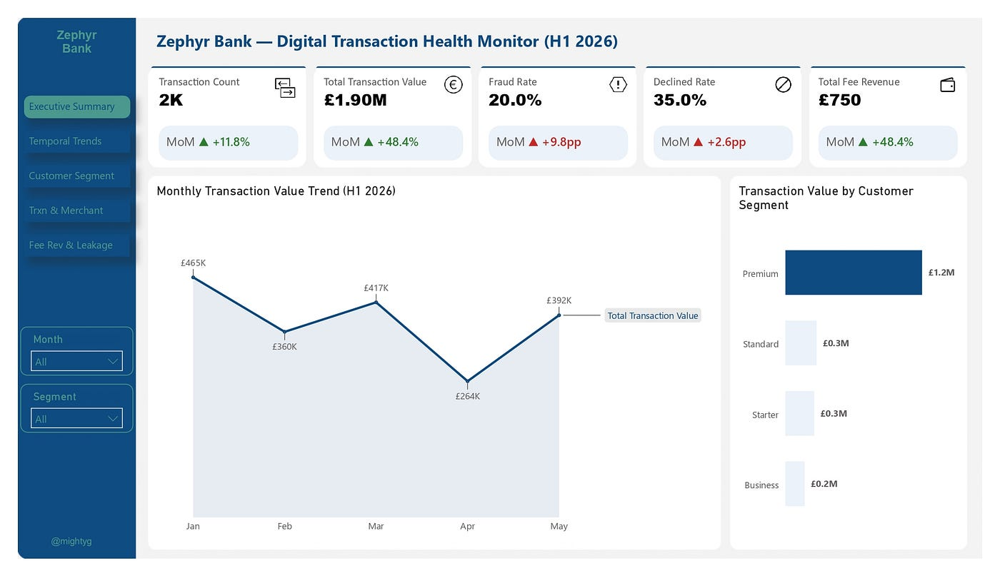
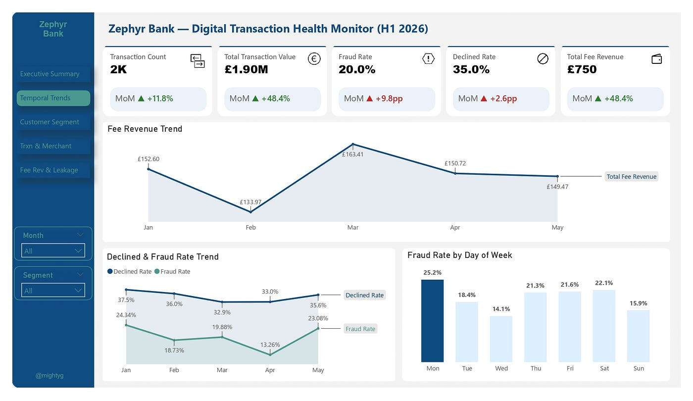
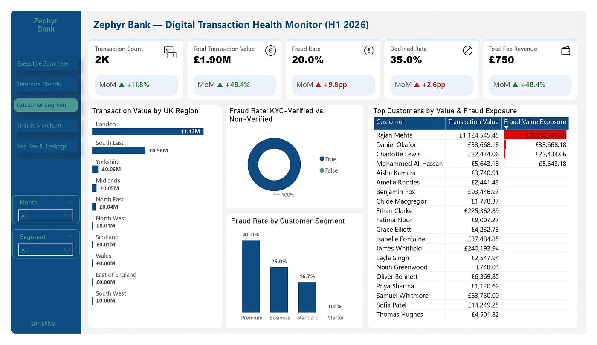
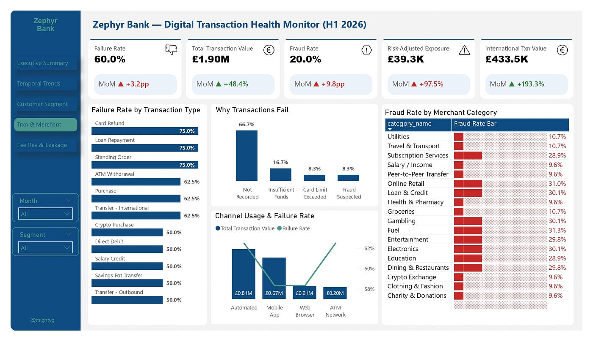
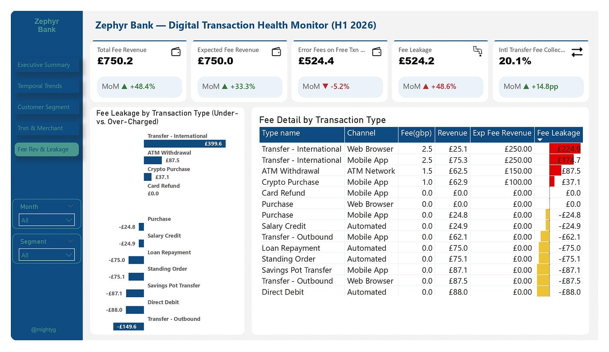

The Numbers Looked Fine. That Was The Problem.
A five-page transaction health dashboard for Zephyr Bank, a UK digital-only neobank — walking through it page by page surfaced four risks a single headline KPI would have hidden.

The Brief
I took on a data challenge to build a full H1 2026 transaction health dashboard for Zephyr Bank, and structured it the way I'd want a client to actually use it: five pages, each answering one stakeholder's question, with every headline metric carrying a month-over-month trend indicator so nothing gets read in isolation.
What the headline numbers hide
None of that was visible from the five top-line summary cards — it only surfaced once the data was broken apart page by page.
Executive Summary: a recovery that isn't as clean as it looks
The top-line cards read reasonably: 2,000 transactions, £1.90M in value, 20.0% fraud, 35.0% declined, £750 in fees — each with a trend arrow from April to May. Total transaction value is up +48.4% month-over-month, which looks like a strong rebound. It is one — but two of those five headline cards are red, not green: fraud rate moved +9.8 percentage points and decline rate +2.6 points in the same month the business "recovered." Growth and risk rose together, a detail a single-number summary would never surface.
The segment breakdown plants the first flag too: Premium customers account for £1.2M of the £1.9M in total transaction value — well over half the book, on just one of four tiers.

Temporal Trends: the fraud pattern has a day of the week
Breaking fraud rate out by day of week, not just by month, turned up something a monthly view alone would never show: Monday sits at 25.2% — nearly double Wednesday's 14.1%, the lowest day in the dataset. Every other day sits in a tighter 15–22% band. That's not statistical noise — it's a pattern narrow enough to point Risk toward a specific review window rather than a blanket policy change.

Customer & Segment Analysis: one region, one tier, four accounts
London alone accounts for £1.17M of total transaction value — roughly 62% of the entire book — with every other region trailing far behind (South East next at £0.56M).
Segment-level fraud rate tells a sharper story than the aggregate 20% ever could: Premium customers show a 40.0% fraud rate, Business sits at 25.0%, Standard at 16.7%, and Starter-tier customers show 0.0%. The tier positioned as the bank's most trusted, highest-value relationship is — in this window — its highest-risk one.
The customer table makes it concrete: Rajan Mehta carries £1,124,545 in transaction value, and every pound of it is flagged as fraud exposure — visually unmissable in the table's red data bar, alongside three other accounts (Daniel Okafor, Charlotte Lewis, Mohammed Al-Hassan) showing the identical pattern. Everyone else on the list shows zero fraud exposure. Four accounts, not a segment-wide problem, are producing the entire fraud picture.

Transaction & Merchant Pattern: the safest-looking transactions fail the most
The intuitive assumption is that failures cluster around risky transaction types — international transfers, crypto. The data says otherwise: Card Refund, Loan Repayment, and Standing Order — three of the most routine, automated transaction types on the platform — each show a 75% failure rate, the highest of any type in the dataset. International transfers, by comparison, fail at 62.5%.
Sitting right next to that chart is the reason nobody can act on it fast: 66.7% of every failed transaction has no failure reason logged at all — "Not Recorded" towers over the three actual named reasons (Insufficient Funds, Card Limit Exceeded, Fraud Suspected) combined.
The risk-tagging system built to flag dangerous merchant categories doesn't track reality either: Fuel, rated a "Low" risk category, has a 31.3% fraud rate — the highest of any category in the dataset. Crypto Exchange, rated "High" risk, sits at just 9.6%.

Fee Revenue & Leakage: a near-zero number hiding two real ones
Total fee revenue (£750.2) against expected fee revenue (£750.0) nets out to almost nothing — a leakage figure so small it would normally get skipped in a review. It's a coincidence. Breaking it apart by transaction type shows £524.4 in fees charged on transaction types that are supposed to be free, sitting right next to £524.2 in fees under-collected on the types that should be charging — two real, opposite-direction problems that happen to cancel out in the total.
The starkest single line: international transfer fees are being collected at just 20.1% of the expected rate.

What I'd action from this
- Investigate the four accounts on the Customer Segment page directly — not the Premium tier as a whole, four specific relationships, one of which is £1.12M of concentrated exposure.
- Split the fee-leakage fix in two: enforce international/ATM/crypto fees that are under-collected, and separately audit why routine "free" transaction types are being charged — don't let the near-zero net number hide either problem again.
- Rebuild merchant risk-tagging from the actual fraud data, and route back-office transaction types (Card Refund, Loan Repayment, Standing Order) through the same failure-reason logging discipline as customer-initiated ones — right now two-thirds of failures across the platform have no diagnosable cause.
Want the full write-up?
The complete analysis, visuals, and methodology are published on Medium.